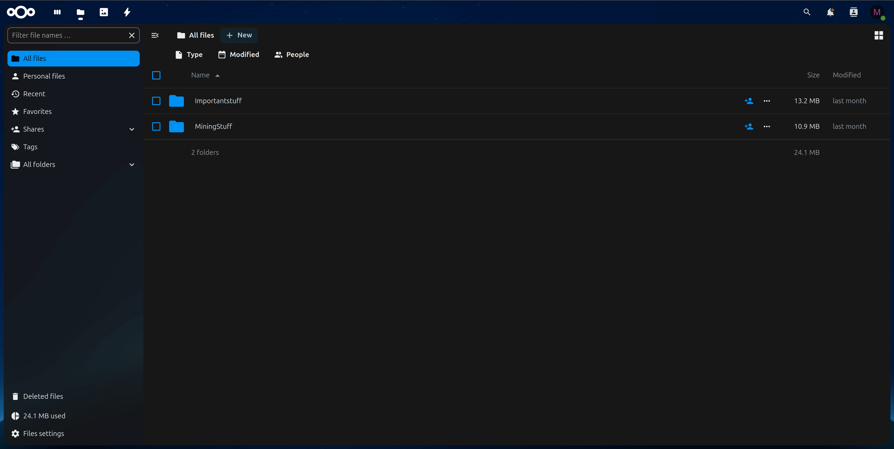
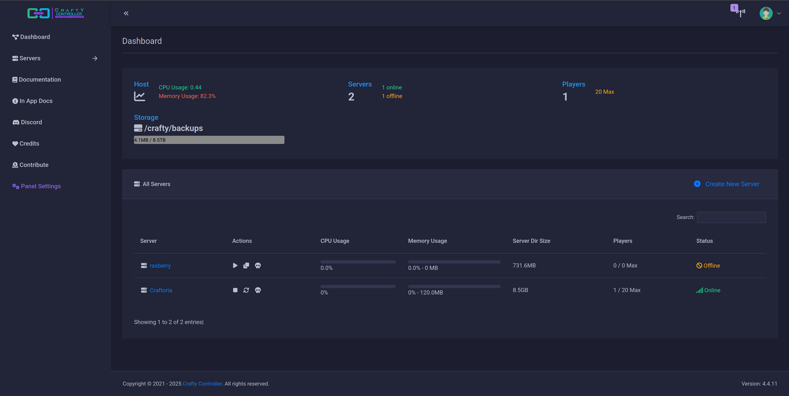

TrueNAS Scale

My primary NAS and container host running on a custom PC I made with the following configuration:
CPU
I7-1280p
RAM
32gb of ddr4 ram
GPU
Intel Arc A380
Storage
5x6TB HDDs (ZFS RAIDZ2)
Cache
2x1TB NVMe SSDs
Key Features
- NVME caching for faster read/write
- ARC Optimizatation uses RAM for filesystem cache
- Hosts all Docker containers and VMs
- ZFS filesystem with data integrity checks
Emby Media Server

Self-hosted alternative to commercial streaming services with these capabilities:
Media Formats
4K HDR, HEVC, AV1
Transcoding
Intel QuickSync + GPU
Users
Family (5) + Friends (3)
Key Benefits
- Complete ownership of media library
- No subscription fees or content restrictions
- Automated metadata fetching
- Hardware-accelerated transcoding
Immich Photo Backup

Private alternative to Google Photos featuring:
- Automatic phone backup (Android/iOS)
- Facial recognition
- Album sharing
- RAW photo support
Nextcloud

Private cloud platform with these configured services:
Version
Nextcloud 27
Storage
Mounted TrueNAS SMB shares
Apps
Files, Calendar, Contacts
Key Features
- End-to-end encryption for sensitive files
- Collaborative editing with OnlyOffice integration
- Mobile sync for iOS/Android devices
- Automated backups to TrueNAS nightly
- 2FA support for all user accounts
Crafty-4 Minecraft Manager

Web-based Minecraft server management with these active instances:
Version
Crafty-4 3.2.1
Servers
3 (Survival, Creative, Modded)
RAM Allocation
12GB total (Docker container)
Backups
Daily to TrueNAS
Key Features
- Web-based console for all servers
- One-click modpack installation
- Player analytics and activity tracking
- Automatic restarts during low activity
- Discord integration for status alerts